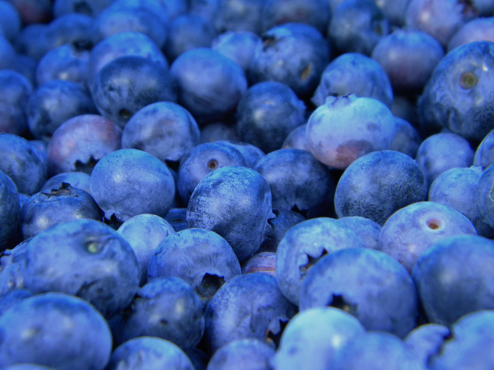

Lompoc, CA 93436
Weather
Wind Speed: mph
Wind Chill: ℉
You can now order specialty fruit drinks!
We are happy to educate our customers and our communities on the importance and benefits of the innovative ingredients that we use every day. No matter where you are in your health and wellness journey, we have something for everyone. Support your self-care regimen and treat your body to something good by fueling it with the nutrients it needs to thrive, day in and day out
We provide nutrient-rich, great tasting products that provide your body with what it needs to thrive. Whether you’re craving a hand-crafted smoothie, are looking for a quick bite with our açaí bowls, or grabbing a raw juice for that mindful pick-me-up, we have something to help you take on the day and feel good doing it.
From the Owner, Sandra Newman
My passion for the land and being outdoors started early in my life when I learned how to plant my first vegetable garden from my Grandmother. Throughout my childhood, I was the producer of vegetables for my family and the ornamental gardener around the house. It was a given by all that knew me I was destined for Agriculture School. I received my B.S. and M.S. from the University of Delaware in Plant Science.
Years went by and as I painstakingly saved my pennies and was finally able to purchase my own piece of heaven. In 2002, I bought 100 acres in North Santa Barbara County with apple trees. The parcel needed a lot of tender care to get it back on its feet and by the spring of 2003, I planted 2 acres of blueberries on a southern slope about 12 miles east of the ocean under frost protection. I decided to farm them organically and hoped that the blueberry plants would stay evergreen through the winter. Our plants stayed evergreen and did not go dormant. This was important because we could produce fruit off-season and not compete with the large growers. Our season started in September and ended in July. So we planted another 4 acres.
As I watched how our plants preformed, I took note that our fruit had a very long ripening hang time on the plant compared to other blueberry locations. My parcel is located at the western edge of the Santa Ynez appellation (where the movie Sideway’s was filmed). The east west mountain range funnels cool, temperate weather inland making for great Pinot Noir and Chardonnay vineyards. This allows us to let the fruit hang and ripen slowly adding wonderful flavors but maintaining its crispness.
In 2005, we planted about 200 tea plants (Camellia sinensis) as a trial planting in conjunction with the University of California, Small Farms Co-operative Extension. In 2007, planted 6.2 acres of Pinot Noir and Chardonnay and made our first wines in 2011. In 2007-2008, we also planted Pakistani mulberries, currants, hardy kiwis and avocados.